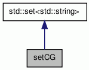

setCG Class Reference
auxiliary class to store sets defined in the CG More...
#include <constraint_grammar.h>
Inheritance diagram for setCG:

Collaboration diagram for setCG:

Public Attributes | |
| int | type |
Detailed Description
auxiliary class to store sets defined in the CG
Member Data Documentation
| int setCG::type |
The documentation for this class was generated from the following file: